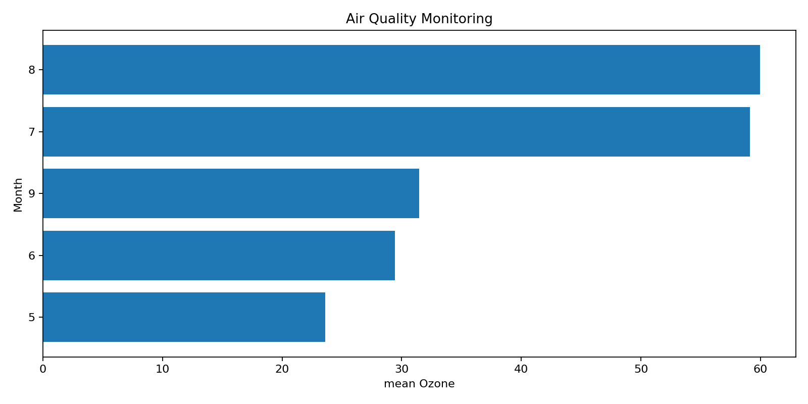

How does ozone concentration vary by month?
The largest observed mean Ozone is 59.962 for 8.0. This ranking is descriptive, not a recommendation.

| segment | rows_used | metric | minimum | maximum |
|---|---|---|---|---|
| 5 | 26 | 23.615385 | 1.0 | 115.0 |
| 6 | 9 | 29.444444 | 12.0 | 71.0 |
| 7 | 26 | 59.115385 | 7.0 | 135.0 |
| 8 | 26 | 59.961538 | 9.0 | 168.0 |
| 9 | 29 | 31.448276 | 7.0 | 96.0 |
New York 1973 summer observations contain missing measurements and serial dependence.
Inspect monitoring coverage before comparing months.